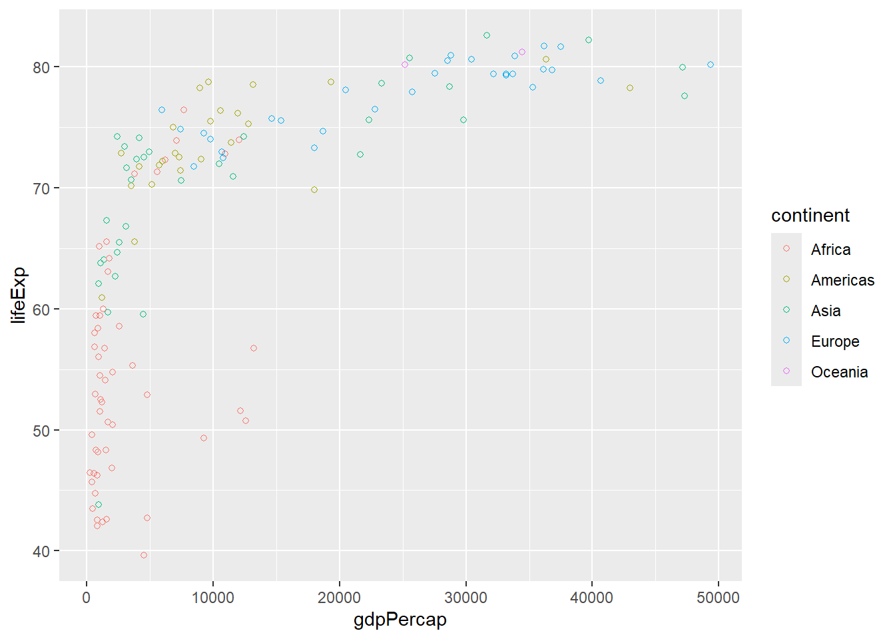
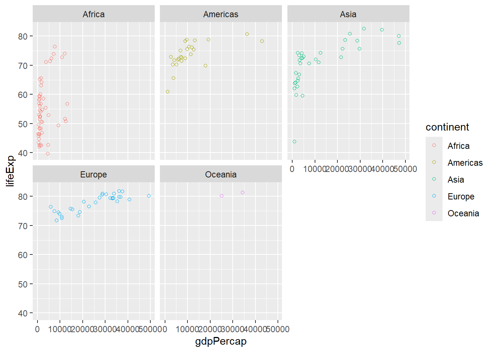

Chapter 9 ADVANCED DATA VISUALIZATION WITH ggplot2 AND OTHER PACKAGES
9.1 Interactive Graphs with plotly
9.1.1 Converting ggplot2 charts into interactive plotly graphs
Before converting the ggplot2 chart to interactive plotly graph, you assign the plot to a vector, say, p. Then load the plotly package and convert the ggplot chart to interactive plotly graph using the ggpotly() function, for example, ggplotly(p).
library(plotly)
p<-ggplot(data = iris, aes(x = Sepal.Length, y = Sepal.Width, color = Species)) +
geom_point(alpha = 0.7, size = 3) +
labs(title = "Publication-Quality Scatter Plot",
x = "Sepal Length", y = "Sepal Width") +
theme_bw() +
theme(
plot.title = element_text(size = 14, face = "bold", hjust = 0.5),
axis.title = element_text(size = 12),
axis.text = element_text(size = 10),
legend.title = element_text(size = 12),
legend.text = element_text(size = 10)
) +
scale_color_manual(values = c("setosa" = "blue", "versicolor" = "green", "virginica" = "red"))
# Convert ggplot2 to plotly
#ggplotly(p)9.1.2 Customizing interactions, adding tooltips, and embedding plotly graphs in web applications.
Customizing Interactions and Adding Tooltips
# Convert ggplot2 scatter plot to plotly with custom tooltip
p <- ggplot(data = iris, aes(x = Sepal.Length, y = Sepal.Width, color = Species,
text = paste("Species: ", Species))) +
geom_point() +
labs(title = "Interactive Scatter Plot of Sepal Length vs Sepal Width",
x = "Sepal Length", y = "Sepal Width") +
theme_bw()
# Convert ggplot2 to plotly with custom tooltip
#ggplotly(p, tooltip = "text")Embedding plotly Graphs in Web Applications (Shiny)
## Warning: package 'shiny' was built under R version 4.3.3# Define UI
ui <- fluidPage(
titlePanel("Interactive Scatter Plot"),
plotlyOutput("scatter_plot")
)
# Define server logic
server <- function(input, output) {
output$scatter_plot <- renderPlotly({
ggplot(data = iris, aes(x = Sepal.Length, y = Sepal.Width, color = Species,
text = paste("Species: ", Species))) +
geom_point() +
labs(title = "Interactive Scatter Plot of Sepal Length vs Sepal Width",
x = "Sepal Length", y = "Sepal Width") +
theme_minimal() %>%
ggplotly(tooltip = "text")
})
}
# Run the application
shinyApp(ui = ui, server = server)##
## Listening on http://127.0.0.1:8777
9.2 Building Web Applications with shiny
9.2.1 Introduction to shiny for building interactive web applications
Shiny allows you to turn your analyses into interactive web applications without needing to know HTML, CSS, or JavaScript. It works by allowing you to separate the user interface from the underlying R code, making it easy to create complex interactive apps.
9.2.2 Creating reactive plots and dashboards that update with user input.
# Load necessary packages
#library(shiny)
#library(ggplot2)
# Define UI
ui <- fluidPage(
titlePanel("Interactive Scatter Plot"),
sidebarLayout(
sidebarPanel(
sliderInput("slider", "Number of points to show:",
min = 10, max = nrow(iris), value = 50)
),
mainPanel(
plotOutput("scatter_plot")
)
)
)
# Define server logic
server <- function(input, output) {
output$scatter_plot <- renderPlot({
sample_rows <- sample(nrow(iris), input$slider)
ggplot(data = iris[sample_rows, ], aes(x = Sepal.Length, y = Sepal.Width, color = Species)) +
geom_point() +
labs(title = "Interactive Scatter Plot of Sepal Length vs Sepal Width",
x = "Sepal Length", y = "Sepal Width") +
theme_minimal()
})
}
# Run the application
shinyApp(ui = ui, server = server)##
## Listening on http://127.0.0.1:8591
9.3 Advanced ggplot2 Extensions
9.3.1 Explore extensions like gganimate for creating animated plots.
library(gganimate)
#Note: This plot will be displayed after you install the gifski package
# Animated scatter plot
ggplot(iris, aes(x = Sepal.Length, y = Sepal.Width, color = Species)) +
geom_point() +
transition_states(Species, transition_length = 2, state_length = 1) +
labs(title = "Animated Scatter Plot of Sepal Length vs Sepal Width",
x = "Sepal Length", y = "Sepal Width") +
theme_bw()